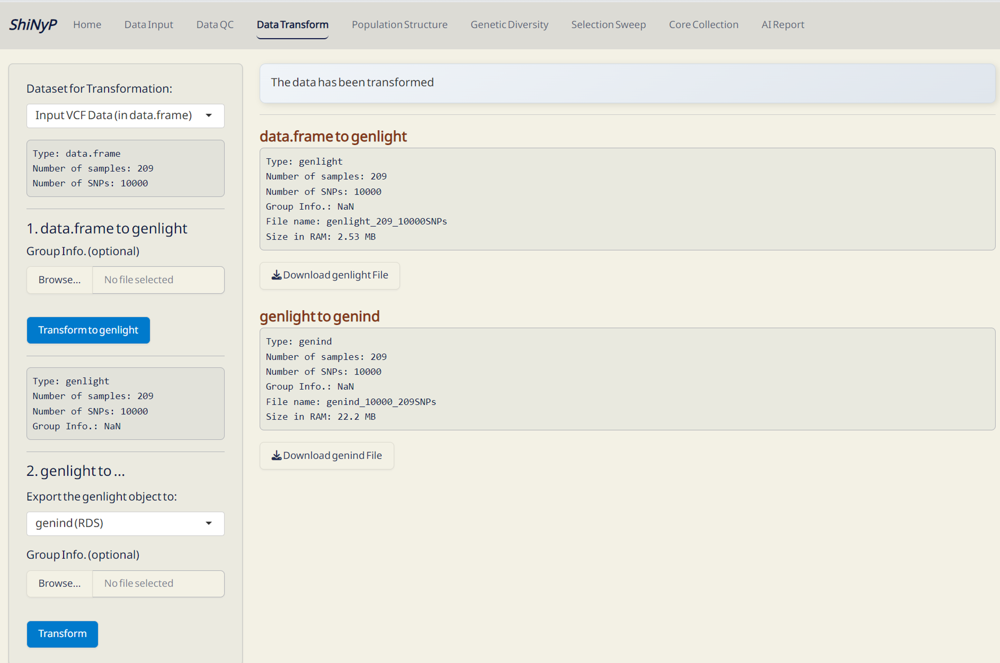

3 Data Transform
➡️ This section allow you to convert your SNP data in data.frame into multiple formats, including genind, genind and PLINK.
Required File:
- Input VCF Data (data.frame file) from the Data Input page or
- Post-QC Data (data.frame file) from the Data QC page.
Step 1: Transform data.frame to genlight
- Click Transform to genlight.
- Download the generated genlight (in RDS format) to skip VCF or data.frame upload next time by directly importing this file.
Step 2: Transform genlight to others
Select the desired data format to export from genlight and click Transform.
Outputs:
- genlight (RDS): genlight file with Group Info. — required for downstream analysis.
- genind (RDS): One of the input format for ShiNyP DAPC subpage, optimized for DAPC analysis to reduce computation time.
The following transformed files will be generated at the specified path you provide.
- PLINK (PED & MAP): Input format for PLINK program, designed to perform a range of basic and large-scale SNP analyses.
- GenAlEx (CSV): Input format for GenAlEx program, offers a wide range of population genetic analysis in Excel.
- LEA (GENO & LFMM): Input format for LEA R package, designed for population genomics, landscape genomics and genotype-environment association tests.
- GDS (GDS): Input format for SNPRelate R package, designed for efficient SNP data analysis.
- STRUCTURE (STR): Input format for STRUCTURE program, used for inferring population structure.
- fastStructure (STR): Input format for fastStructure program, used for inferring population structure from large SNP data.
- PHYLIP (TXT): Input format for PHYLIP program, used for phylogenetic tree reconstruction and evolutionary analysis.
- Treemix (GZ): Input format for Treemix program, designed for modeling population splits and migration events.
- BayeScan (TXT): Input format for BayeScan, used for detecting loci under selection.
